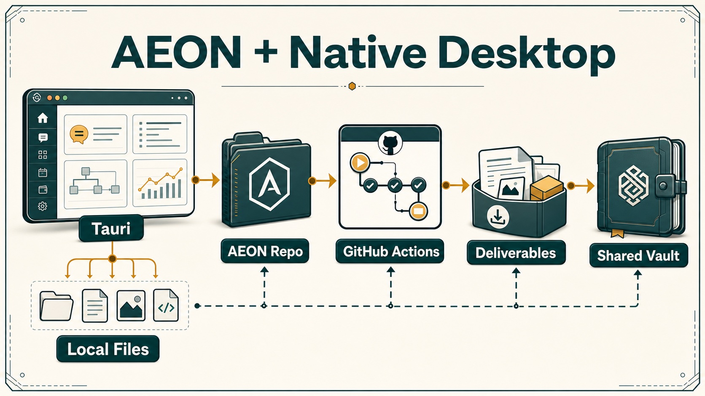

HivemindOS manual
Native App
HivemindOS has a Tauri desktop target.
It runs the same Next.js dashboard in a native window without taking over the managed dashboard port 5020. The goal is not to fork the product. The goal is to give This Mac better local file and setup access while keeping the browser app fully supported.

Phase 1
Run the native development shell:
pnpm tauri:dev
This starts the shared Next.js app behind the Tauri loading proxy on http://127.0.0.1:5021 and opens it in a Tauri window. The proxy chooses an isolated internal Next.js backend port starting at 5121, so stale backend processes do not corrupt a fresh dev run. The normal browser dashboard still uses:
pnpm dev
which defaults to http://localhost:5020.
Phase 2
Build the local production native app bundle:
pnpm tauri:build
Phase 2 keeps the browser and native app on the same Next.js codebase. The browser version still serves the full Next app and API routes through pnpm dev / pnpm build.
Phase 3
Packaged native app builds use the embedded Next server by default:
pnpm tauri:build
Release builds enable HIVEMINDOS_TAURI_EMBEDDED_NEXT. The prepare step builds a standalone Next.js server into src-tauri/resources/hivemindos-next, stages a Node.js runtime in src-tauri/resources/hivemindos-node, and keeps src-tauri/static as the fast loading shell. At launch, the Rust shell starts the bundled server on an ephemeral 127.0.0.1 port, then navigates the native window to the full dashboard so /api/* routes are available in the packaged app.
This is the supported full packaged desktop mode. It keeps the browser and desktop on the same Next.js route graph, including Fleet discovery and other server-backed dashboard features.
Local pnpm tauri:build produces the embedded production .app bundle and intentionally skips local DMG creation, updater signing, and release-channel update prompts, because DMG packaging depends on the host hdiutil disk-image device stack and updater artifacts require the release signing key. GitHub releases use pnpm tauri:build:release after downloading the shared embedded standalone artifact, so published releases still produce DMG/updater assets and remain eligible for signed GitHub update checks.
Opening the packaged app does not auto-run setup.sh or install.sh. The first-run wizard uses the same four steps on macOS, Windows, and Linux: an explanation, one choices screen, live progress, and a verified completion screen. It detects AI helpers without reading private files, defaults to this computer only, and clearly separates helpers that are ready from ones users can add later. “Not now” asks again on a future launch; “Use without setup” is a durable choice that can be reversed from Settings.
Setup begins only after the user selects Set up this computer. It runs non-interactively in the background, streams an accessible activity log, and does not report success until that exact setup process exits successfully and the local agent bridge answers. The app downloads the immutable source commit embedded in the installed build instead of a moving branch. Packaged-app setup skips the source dependency install, dashboard build, and development server, so downloaded-app users do not get the full source workspace pnpm install. Users who want source/development mode should clone the repository and run setup from that checkout.
The default path creates the local workspace and bridge only. Hivemind Link, full system Tailscale, the web-research runtime, and Code Proof are optional choices. Web research and Code Proof start off. Enabling Code Proof explicitly downloads GitLawb, creates a local DID, and registers its public ID with the GitLawb network; private keys remain local. Setup never starts a full GitLawb node or installs Docker/Postgres. After verified completion, the primary action opens a fresh chat with a plain first-task prompt; it does not automatically open a wallet or financial integration.
For debugging or constrained builds, a static fallback can still be generated:
pnpm tauri:build:static
The static fallback exports the shared dashboard React app into src-tauri/static, prunes bulky browser-only icon/source assets, keeps Lottie animation assets, and does not bundle the standalone Next server or a Node.js runtime. The static fallback still needs native bridge coverage for any feature that depends on local files, fleet state, shared-brain data, schedules, runtime files, setup actions, AEON workspace data, deliverables, usage telemetry, or any other backend behavior that would otherwise come from a relative /api/... Next route.
The generated src-tauri/resources contents are ignored by git and rebuilt for each package. Keep new feature code shared by putting platform differences behind small adapters instead of forking browser and desktop views.
Static builds are bounded by TAURI_NEXT_BUILD_TIMEOUT_SECONDS and default to 1800 seconds. Embedded builds default to a 12288 MB V8 heap, a 14000 MB RSS memory budget, and a 3600 second timeout because the production route graph includes the full App Router API surface. Static export hides src/app/api only during the export so API routes remain available for the browser app and embedded release mode.
Native Bridge
The desktop shell exposes a narrow command surface for operations that should be native on This Mac:
| Command | Frontend helper | Purpose |
|---|---|---|
desktop_status |
getNativeAppVersion |
Read build commit, branch, dirty flag, runtime phase, native host, and native server port |
list_local_directories |
listNativeLocalDirectories |
Browse local directories without routing through the collector |
create_local_folder |
createNativeLocalFolder |
Create a local child folder after validating and cleaning the requested name |
display_local_path |
displayNativeLocalPath |
Normalize local paths for display |
fleet_discover |
getNativeFleetDiscovery |
Discover Tailnet machines and collector-backed agents for the static fallback |
native_setup_status |
readNativeSetupStatus |
Detect setup prerequisites and local agent runtimes for the first-run wizard |
native_setup_run |
runNativeSetup |
Run the approved, pinned setup contract in the background and stream run-correlated progress |
The wizard passes the same explicit Code Proof choice to both setup scripts. Full local node hosting remains a later Integrations/project-linking action.
The browser path remains fully supported. Frontend code calls native helpers only when Tauri is detected and the target collector URL is local. Remote machines still use Hivemind Link or collector directory APIs, so local native privileges are never confused with remote access.
Current consumers include AEON workspace clone/link flows, chat folder creation, scheduler folder browsing, Kanban linked directories, and shared machine-aware directory picking.
Safety Notes
- Port
5020remains reserved for the managed browser dashboard. - Phase 1 development uses
5021. - Phase 3 packaged builds use an ephemeral localhost port for the embedded dashboard server.
- Static fallback packaged builds load static UI directly and must keep native bridge parity for backend-backed features.
- Generated resources are rebuilt, ignored, and scrubbed of local
.env*files. - Native filesystem helpers are intentionally directory scoped and local. Remote browsing stays behind collector APIs.